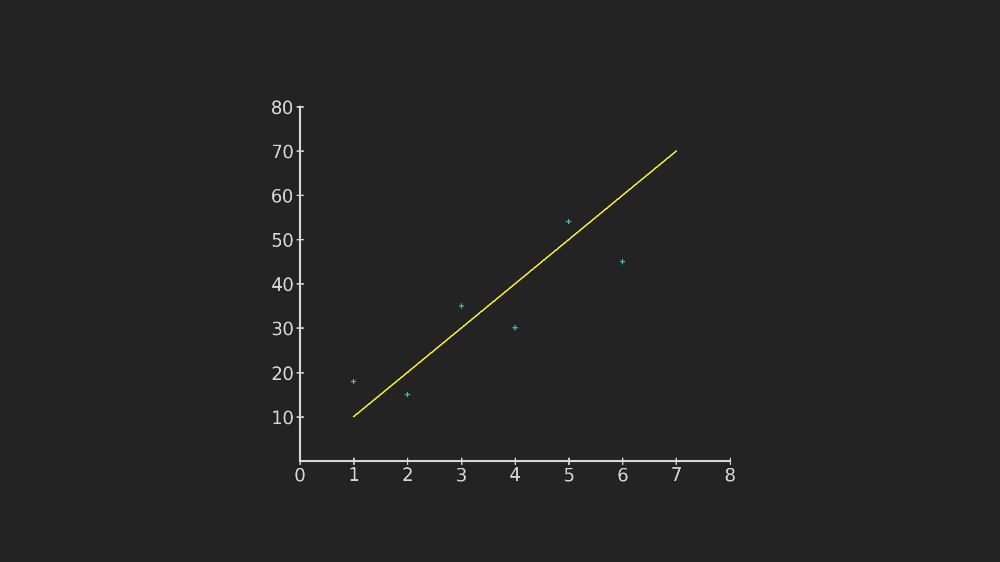
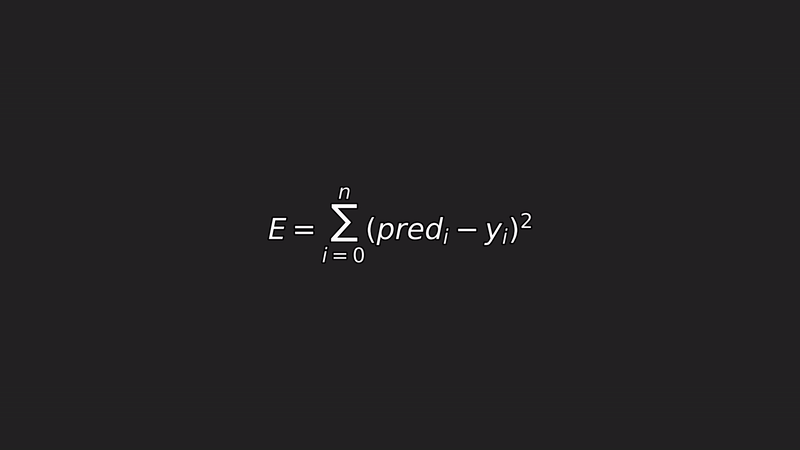
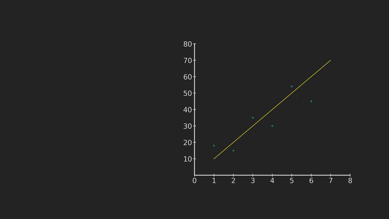
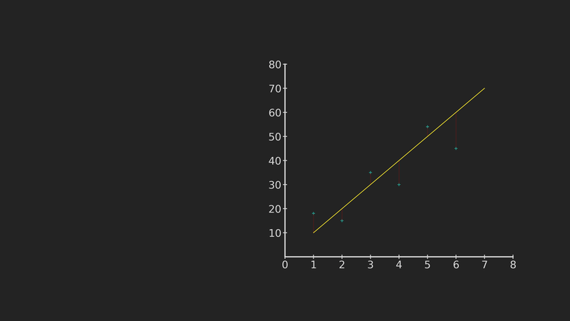
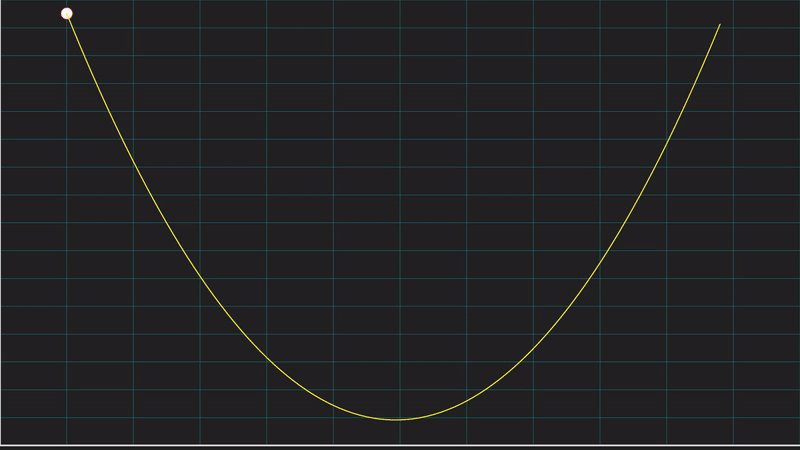
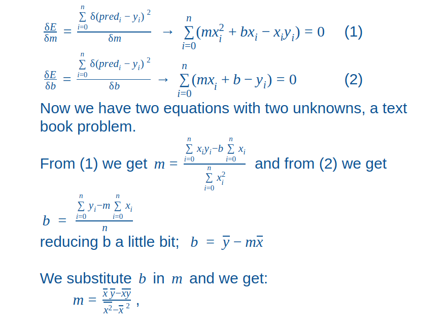

Linear Regression: Method explained with animations
Linear Regression: Method explained with animations
How many kilometers will you translate during the week?, how many movies do you think you will watch this month?, how much money will enter your bank account this year?. If you tried to answer this questions you used one of the most popular methods in science, an estimation.
Humans are always trying to model the universe, make predictions, even if we don’t realize it or in very common situations as the questions above, and one simple way to do it is by making an estimation.
If we talk about artificial intelligence and machine learning, we are talking about modelling the world with the help of mathematics, data and the power of computers. One basic technique to do exactly that using estimations is: Linear Regression.
Linear Regression
Linear Regression is a MUST if you attempt to start a career as a data scientist or just learn about AI.
Basically this method is a method of approximation, we use it to describe and generalize, in a robust way, the relationship between one variable and another (or a number of other variables).
This technique is commonly used for predictions, estimations of values or to evaluate how many factors affect a given result.
We can find linear regression in the industry: predicting market prices, estimating sales in a company, risk models for insurance and even sports analytics.
The basis for this type of model, as the name implies, is the equation of a line, you can read about it here if you need to, and the method behind it is called Least Squares.
Least Squares
The goal of least squares is to find the line that fits our data best.
Taking as an example the latitude of the position of a planet and 6 days in which we recorded the information, we can easily see a pattern, a tendency and we can draw a line using it as our first model.

Let’s say that line makes a good job, now how do we know it is the best line? well, to answer that we need to compare the difference between our observations and the estimation of our model, following the method of least squares.
Error Equation

The method of least squares and its steps are described by this equation, the error equation.
As you probably noticed already the equation of a line is embedded in the expression as pred (as in prediction).
So the first step is to calculate the difference between our line and our observations.

Then we square the values.

Some important observations need to be addressed, we square the distances for two reasons:
1.- One reason is to eliminate the negative signs to ease the addition of the values and reach a total amount of the error.
2.- And another reason is that it amplifies the errors with greater magnitude.
We can see the last reason as a way to let us know when we are going the wrong way, helping us to focus our attention in the greatests errors while giving us a hint to where to move our line.
Think of it as when you play Mario Kart and you get confused and go the wrong way, the game let’s you know you are going the wrong way in such manner that you can not ignore it, it would be really hard to see your mistake if the sign was on the edges of the screen together with the rest of the info.
After having the squared values we add them up.
The next step could be proposing a new line to diminish the error squared and repeat the procedure until we find the line with the least squared error, but is that the best we can do?
No, here we have two options we can follow, one is to go through the method of gradient descent a must-learn method to understand neural networks, and the other option is partial derivatives. The simplest one is partial derivatives (and it’s actually the one used in popular libraries such as sklearn) so that is the one I’ll explain in this publication, but I promise you I will cover gradient descent in the future (if you are nice).
Partial derivatives
Partial derivatives are excellent to calculate how a function, depending of several variables, changes with respect to one of them, leaving the other ones constant. A crucial feature of partial derivatives is that they are equal to 0 on the maximum and minimum points of a function.

In the animation above we have the cost function or the error function and we are looking for the minimum point. A partial derivative tells us the rate of change at each point of the function, hence if we look at the left side of the graph we can see the rate of change is negative, the value of y decreases while we move forward in x, on the right side, the opposite happens, the values of y increases with respect to x, therefore it is logical to think that there must be a point between those changes from negative to positive, where the value goes through 0, and it’s right there where the minimum value resides, where the rate of change or where the derivative is equal to 0.
Great, so the next step is compute the partial derivatives of our error function and set the result to 0, to put everything in terms of the minimum value of the error. we will take the derivatives with respect to m and b, since they are the values we are interested in.

piece of cake.
Having done all of the steps above and estimating the values of slope and intercept of our model, we are more than ready to predict the latitude of the planet for the next day.

¡voila!
References
http://mathworld.wolfram.com/LeastSquaresFitting.html
Project used for animations: https://github.com/jfreek/math_animations
Giphy channel:https://giphy.com/channel/jfreek